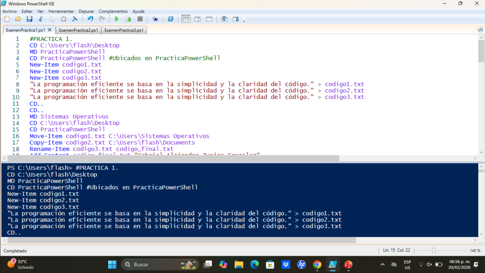
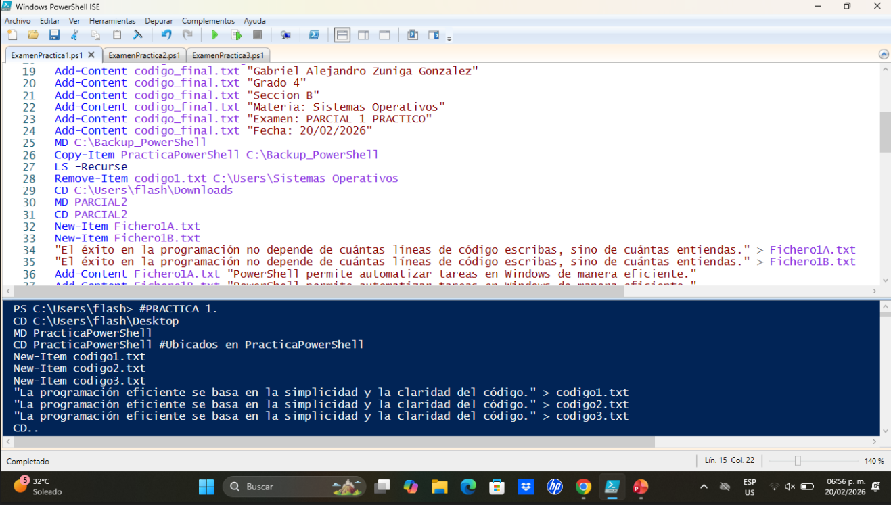
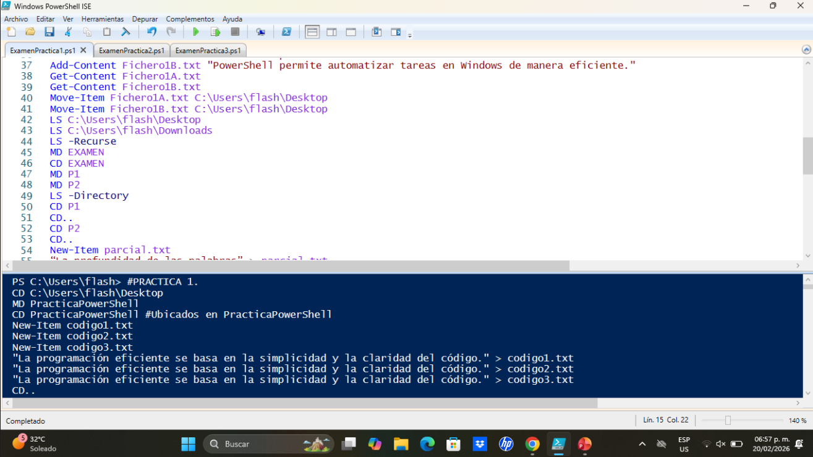
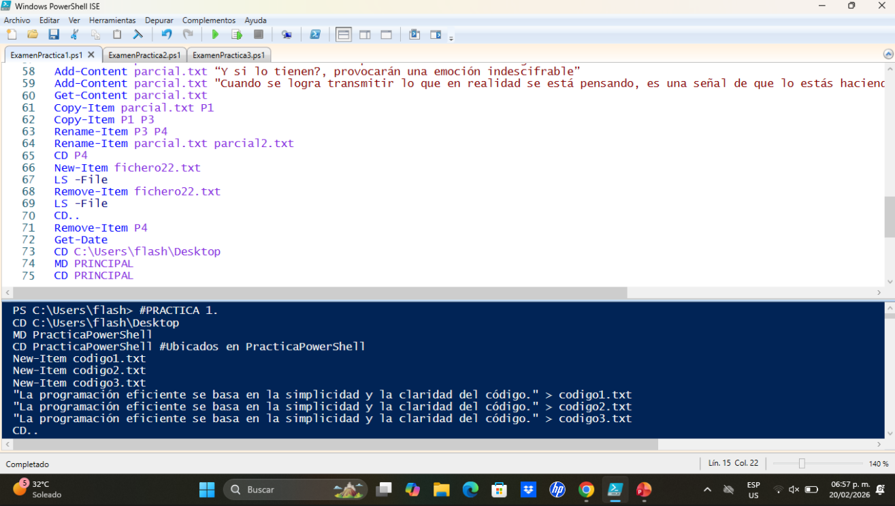

WINDOWS POWERSHELL

PowerShell es un potente entorno de scripting y shell de línea de comandos de Microsoft, diseñado para administradores de sistemas y desarrolladores. Permite automatizar tareas repetitivas y gestionar configuraciones complejas de manera local y remota. Actualmente es multiplataforma, funcionando en Windows, Linux y macOS.
COMANDOS BASICOS
Get-Help: Muestra información de ayuda sobre cómo utilizar un comando (ej. Get-Help Get-Service).
Get-Command: Enumera todos los comandos, funciones y alias instalados.
Get-Member: Muestra las propiedades y los métodos disponibles de un objeto.
Get-ChildItem (o ls / dir): Muestra los archivos y carpetas del directorio actual.
Set-Location (o cd): Cambia la ruta actual de la carpeta.
Copy-Item (o cp): Copia archivos o carpetas.
Remove-Item (o rm): Elimina archivos o carpetas.
New-Item: Crea un archivo nuevo o una nueva carpeta.
Get-Process: Muestra todos los procesos que se están ejecutando en el equipo.
Stop-Process (o kill): Cierra un proceso en ejecución (ej. Stop-Process -Name chrome).
Get-Service: Muestra el estado de todos los servicios de Windows.
Start-Service / Stop-Service: Inicia o detiene un servicio específico (ej. Start-Service wuauserv)
Get-Date: Devuelve la fecha y hora actual del sistema.
Get-ComputerInfo: Obtiene información detallada sobre el sistema operativo y el hardware.
Clear-Host (o cls): Limpia la pantalla de la consola.
EJEMPLO DE PRACTICA
CREACION DE DIRECTORIOS



